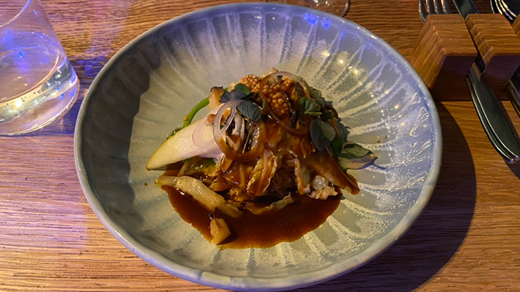

Mijn mening & ervaring
Op 15 januari 2024 gingen mijn vriend en ik uit eten bij Restaurant De Kas.
Eten in een hoger segment binnen de horeca doe ik niet vaak, hierom werd eten bij De Kas een hele belevenis. Bij binnenkomst werden we verwelkomd door een gastvrouw, die onze jassen aan namen daarna vertelde wat er werd verbouwd in de kas links van ons. Nadat zij onze jassen had opgehangen bracht zij ons naar onze tafel. Hier kregen wij ons aperitief aangeboden en werd het verhaal achter De Kas verteld door onze ober van de avond. Wij vonden het een leuk verhaal, dat veel toevoegde aan de beleving en het concept duidelijker maakte.
Amuse
Bouillon Brood Tapioca
Na het verhaal achter De Kas, volgde de amuse, welke bestond uit een bouillon van warme soja. Het was een sterke starter vóór het gekozen 5-gangenmenu. De smaakvolle bouillon met de zoute soja zette de toon voor de algemene impressie van de volgende gangen. Als bijgerecht door de gangen heen, werd er zuurdesembrood geserveerd met een paddenstoelen-boter-crème, het versgebakken brood diende als neutralisatie tussen de gangen in. Naast het brood kregen wij een luchtige cracker van tapioca en een selderij-dip op tafel. Hoewel het best een veilige keuze was, waren de dipjes fris en innoverend.
Voorgerecht
Loempia Witlof Radiccio
Als volgt kregen wij nog twee kleine hapjes. Een hiervan was een loempia gevuld met gember, selderij en wortel gewikkeld in een rijstevel met daaroverheen witte en zwarte sesamzaadjes en een soja-dressing. De ander bestond uit witlof en radicchio, dit lag op een bedje van kruim. Dit werd gebonden met een wasabi-mayonaise welke verstopt lag onder de hoofdspelers van dit gerecht. Hoewel door ons beide witlof – of soortgelijke – niet als fantastisch wordt ervaren, zorgde de combinatie van de nootachtige smaak van het kruim en de wasabi voor een interessante smaak.
Eerste gang
Radiccio Knoflook Soja
Snel hierna startte de eerste gang, waarbij radicchio centraal stond. Hierbij werd granaatappelpitjes, zwarte knoflook en een soja-dressing geserveerd. De radicchio was op verschillende manieren klaargemaakt, dit zorgde voor een interessante textuur. De soja koppelde weer terug naar de eerdere bouillon, verder maakte (vooral) de zwarte knoflook in combinatie met de granaatappelpitjes dat de van nature wat bittere radicchio een zoetere en sterke smaak kreeg, wat ons beide erg was bevallen.
Tweede gang
radijs Rabarber Grapefruit
Na de uitgebreide wijnkaart, gesorteerd op land en streek, hebben bekeken, kozen wij voor een rode Domaine des Entrefaux, welke – als wij onze ober mochten geloven – een goede keuze was voor bij de tweede en derde gang. Hoewel de tweede gang een wat zoetzure aard had, paste de zachte rode wijn hier ook goed bij. De gepofte radijs, rabarber en grapefruit op een bedje van labneh, de grapefruit viel erg in de smaak bij mijn vriend, hoewel ik hier minder fan van ben.
Derde gang
Rodekool Aardappel Peer
Bij gang drie werden de veiligere combinaties wat meer ontweken en kregen wij rodekool op aardappelpuree, tot dusver niet zo spannend. De smaaktoevoeging kwam vooral van de rauwe peer, geroosterde hazelnoot en mosterd-hollandaise. De lichtzoete peer met de smaakvolle hazelnoot maakte de bitterdere rode kool een sterke toevoeging bij de aardappelpuree. Het lichte vleugje mosterd van de smeuïge hollandaise maakte de hele gang af en ook iets wat wij nog niet eerder hebben mogen ervaren, wij waren aangenaam verast.
Vierde gang
Boerenkool Selderij Truffel
Kool bleef het thema van de avond. Tijdens gang vier, bracht de bediening ons boerenkool op verschillende manieren. Waar de een van gepoft en als basis werd gebruikt, kwam de andere geroosterd en diende als garnering. Hieraan werd een schuim van selderij en geschaafde zwarte truffel toegevoegd welke het gerecht bonden. Hoewel het niet werd toegelicht door de bediening, lag er onder het bedje van gepofte boerenkool, wat rode kool en taugé. Hiermee werd de gehele gang wat knapperiger, waardoor deze gang wat meer diepgang kreeg.
Vijfde gang
Rooibos Gember Appel
Het dessert, waar wij beiden zo naar uitkeken, was aangenaam, maar niet vergelijkbaar met de kwaliteit van de overige gangen. Alle voorgaande gangen werden door ons ervaren als een complexere samenstelling van losse ingrediënten, welke op originele manier werden gecombineerd in een samenhang wat perfect klikte voor de algehele smaak. Waar het dessert wat simpeler was. Desalniettemin, is lekker een ‘understatement’. Het sorbetijs met rooibossmaak bedolven onder schuim van gember en appelstukjes, was het een fris eind van het hele menu.
Om het af te leren
Na alle gangen waren wij aan het reflecteren op het diner met positieve reactie. Voordat wij hadden kunnen afrekenen en terug te gaan naar de gastvrouw voor onze jassen, kregen we nog een plezante verrasing. Bij de rekening kregen we nog een bolletje pure chocolade roomijs “om het af te leren”.
Algehele ervaring
Het concept van De Kas was uniek, creatief en Michelin waardig. Het wisselende weekmenu maakt het een restaurant om vaker naar terug te keren. Door buiten de gangen om de kleine gerechten te serveren gemaakt van wat wij denken de resten van de gangen, zorgde ze voor minder food-waste. Het eten was exquisiet en de service erg goed. De algehele ervaring is te omschrijven als een 4.5 van de 5 sterren en zullen dit zeker aanbevelen aan anderen.